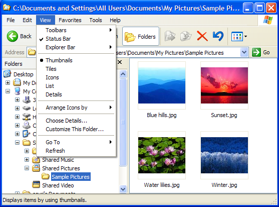
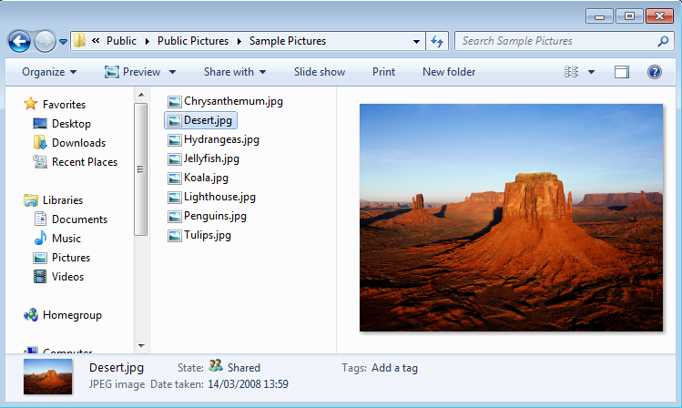

When the user is using the Microsoft Windows Explorer to navigate along the files on the file system there are some opportunities for developers to provide visual information for custom file formats.
In Windows XP was introduced Thumbnail Handlers and in Windows Vista was introduced Preview Handlers.
Thumbnail Handlers allow the developer to provide thumbnail visualization for their custom file formats. The thumbnails are static images with small size and no interaction. The image bellow show thumbnails for JPEG images in Windows XP.

Preview Handlers allow the developer to provide a preview visualization for their custom file formats. The preview can have larger sizes and interaction because they are show in a separate are on the Windows Explorer window. The image bellow show the preview pane for a JPEG image in Windows 7.

The MSDN documentation describing this process in at "Implementing a Custom File Format". The two samples that helped us to create this tutorial are "C++ Windows Shell thumbnail handler (CppShellExtThumbnailHandler)" and "C++ Windows Shell preview handler (CppShellExtPreviewHandler)".
Both handlers are implemented as DLLs that exports 4 functions with known names and behavior. Here is a DLL def file need by the project: "GlobalExportFunctions.def".
The 4 functions are implemented in the module "dllmain.cpp". They use the definitions declared in the "Config.h". Every custom file format must define its own values in this header, the "dllmain.cpp" file itself does not need to be modified.
The first thing to do is to generate two GUID codes to uniquely identify the handler. These codes are generated with the Microsoft ® GUIDGEN Application (guidgen.exe) option 3, included in Windows SDK and Visual Studio distributions. It can also be launched from inside Visual Studio in the menu "Tools / Create GUID". Then define a few strings that describe your file format and finally define which handler you are building: a thumbnail handler or a preview handler.
Then it is time to implement your own handler.
The package ShellExtensionHandlers.zip contains all the files necessary to build both handlers. It includes a Visual Studio 2013 project already configured to use IUP, CD and IM with or without OpenGL. Change the name of the project to change the name of the DLL. By default it will generate a DLL called "ShellExtensionHandler.dll".
A sample thumbnail handler is provided in the file "imThumbnail.cpp" implemented using IM only to load a TGA image file contents, resize it to the thumbnail size and return the proper handle.
A sample preview handler is provided in the file "IupPreviewWindow.cpp". This is the second file you need to edit to implement your own preview handler. The sample code is very easy to understand. It will use IUP and, CD or OpenGL, to draw a TGA image file loaded using IM. Take a look and change it according to your needs. But it is recommended that the creation of the IupDialog should not be changed.
The DLL and its dependencies do not need to be installed on the system. They can be placed in any folder to be used from there. That folder also does not need to be in the PATH. But it is necessary to register the handler in the system.
The command:
regsvr32 ShellExtensionHandler.dll
will register the shell extension handler. This command can be executed as a post operation during an application setup for instance.
To uninstall the handler the command is:
regsvr32 /u ShellExtensionHandler.dll
IMPORTANT: the command must be executed with administrator privileges or it will fail.